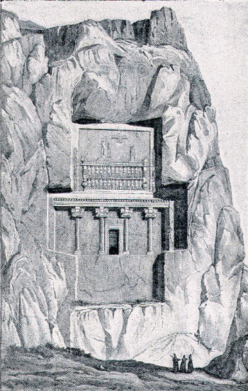

The eventful battle which was now fought between the rival brothers, was called after some villages which were then in the neighbourhood, but which have long since disappeared, the battle of Cunaxa.
Cyrus had desired Clearchus to charge the centre of the enemy's line, where the King was stationed. "For," he said, "if we win there, the whole battle is ours."
But Clearchus was afraid that if the Hellenes were to advance against the centre, they would find themselves surrounded by the innumerable host of the enemy and attacked on all sides at once. He therefore thought it better to attack the troops of the left wing, immediately opposite to him, and he assured Cyrus that his plan would succeed. But, judging from the result, he would have done better to follow the instructions of Cyrus.
The troops of the left wing consisted of a body of cavalry under the command of Tissaphernes; a company of archers who carried shields of basket-work fastened to poles which they stuck into the ground for protection while discharging their arrows; and a company of Egyptian infantry, armed with great wooden shields that covered their whole body. Contrary to the expectation of Cyrus, they advanced, behind their scythe-chariots, in silence, and with a firm, even step.
When they had come within a distance of five or six hundred yards, the Hellenes sang the paean, or battle-hymn, and began to move forwards, at first slowly, but by degrees faster and faster, until their pace was like a whirlwind.
At the mere sight of them, the Barbarians turned and fled. Before they had come within arrowshot, the enemy's line was broken, and in wild confusion, the archers thinking of nothing but saving their lives by running away. The drivers of the scythe-chariots sprang from their seats and left the horses to go where they pleased. The horses rushed pell-mell over the plain, some to the right, some to the left; many of them ran back into their own ranks adding to the confusion there; only a few went in the direction of the Hellenes, and these did no harm.
The only part of the line that made any resistance was the cavalry of Tissaphernes. These troops rode rapidly forward against the light-armed Hellene, archers. But they, at the approach of the cavalry, opened their ranks and let them pass through, and then hurled javelins and arrows at them as they went by. The whole injury sustained by the Hellenes in this charge consisted in the loss of one man shot by an arrow, and another disabled through being caught by one of the scythe-chariots.
It was only at the end of several hours that the Hellenes returned from the pursuit of the flying Barbarians. On their way back they met with another detachment of the enemy's troops, but these they defeated, if possible, even more easily than the first.
They were now very anxious for their long-delayed meal, for as yet they had eaten nothing that day. But Cyrus had arranged that all the food should be stored in the Barbarian camp, which had been plundered by a body of the enemy's troops. The Hellenes were consequently obliged to go supperless to bed, only a few of them having been able to find something to eat. Yet they were cheered by the thought of the victory they had won, and by the hope that Cyrus had in like manner triumphed over the cowardly Barbarians opposed to him. They had not indeed heard anything of him, but supposed that he had gone far in pursuit of his foes, and was therefore at a distance from the camp.
The next morning, as they had nothing else to eat, they slaughtered the oxen and asses belonging to the baggage-wagons, and sought in the battle-field for fuel to make a fire. There they found great quantities of arrows, and shields both of wood and wicker-work, as well as empty wagons and overturned chariots. All of these they piled up in heaps, and kindled therewith several fires in which they cooked the food, holding it in the flame on their spear-points, and so appeased their hanger for that day.
They wondered however that Cyrus neither came, nor sent them word of what had happened since they had left him to pursue the Barbarians, and resolved to set out in search of him. But whilst they were preparing for the start, they were hailed by two soldiers of the army of Cyrus, who brought them this terrible news:—"Cyrus is dead. Ariaeus and the Barbarians under him have been put to flight."
On perceiving the easy victory won by the Hellenes, Cyrus had been beside himself with joy, for he thought that the fate of the day was already decided. All those around him shared his expectation, and the officers of the body-guard sprang from their horses and threw themselves in the dust before him, as if he were already the Great King.
For a moment he waited to see what the enemy would do. Then, observing that the troops of Artaxerxes were making a movement as if to wheel round and attack him in the rear, he hesitated no longer, but dashed forward with his six hundred chosen companions towards the place where the King was stationed with his guard of six thousand horse.
With his own hand Cyrus killed the leader of the guard, and so irresistible was the charge, that the ranks of the enemy were broken through in a moment, and driven right and left before the cavalry of Cyrus, who pursued them eagerly.
Thus it happened that the prince was left almost alone, with only his most intimate friends, those whom he called his table-companions, round him. At the same moment he caught sight of his hated brother, the troops in front of the King having been put to flight, and on seeing him, lost all command of himself. Mad with passion he galloped up to him, crying out, "I see the man!" and hurling his javelin, hit him in the breast, inflicting a wound which however was but slight, the course of the javelin having been checked by the coat of mail worn by the King.
But at that moment, while still almost alone, Cyrus was struck under the eye by the javelin of a Carian lancer. It was a mortal wound, and falling from his horse to the ground, he died immediately. All his table-companions fell around him; the most faithful of all leaped from his horse and threw himself upon the corpse, where he was either killed by the enemy, or, as some say, fell upon his own sword.
The head and right hand of Cyrus were cut off by command of Artaxerxes, and carried through the ranks on the point of a long spear. And when Ariaeus, who commanded the right wing of the rebel army, saw that Cyrus was dead, he sought safety in flight. Thus the battle which had begun so well for Cyrus, turned in a moment quite unexpectedly, and all the hopes of his followers were dashed to the ground.

TOMB OF DARIUS I. NEAR PERSEPOLIS.
But for the javelin thrust which ended the life of Cyrus, the future history of Persia might have been very different. Artaxerxes, the indolent, was not the man to save his country. From him no effort could be expected, no attempt to improve his subjects, or check the luxurious selfishness which was bringing the country to ruin. But had Cyrus, the brave, wise, and generous Cyrus, become King, he might have been able, not only to arrest the ruin, but even to restore the empire to something of its former greatness. For since the time of Cyrus I., the throne of Persia had never been occupied by a man so worthy and so able to govern a great nation as was his young namesake.
Had it been Artaxerxes who had fallen in the battle, the Queen-mother Parysatis would hardly have wept other than tears of joy, for then Cyrus would have been sure of the throne. But now that her best-beloved son was killed, the grief of Parysatis was only equalled by her burning desire for vengeance on all who had had any part in his death. She contrived to get into her power the Carian archer by whose javelin her son had been wounded, and the soldier who had carried through the ranks his head and hand, and caused them both to be tortured to death.